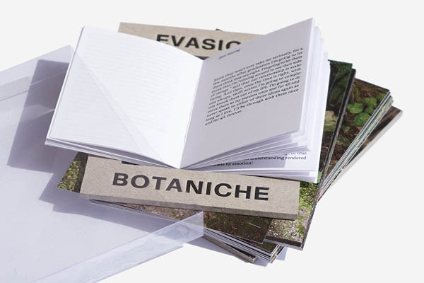
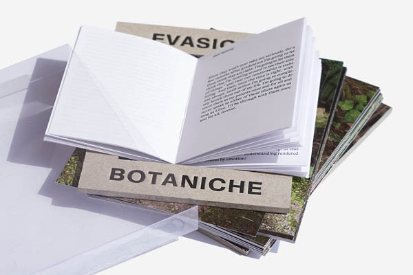
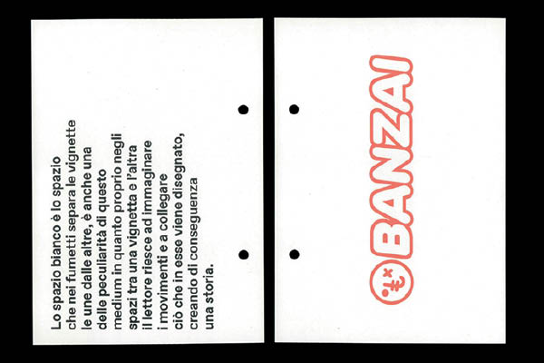
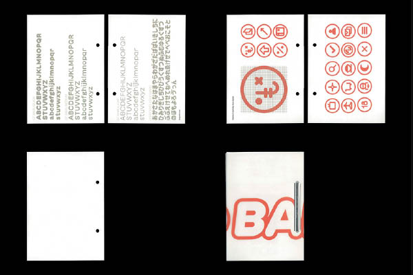
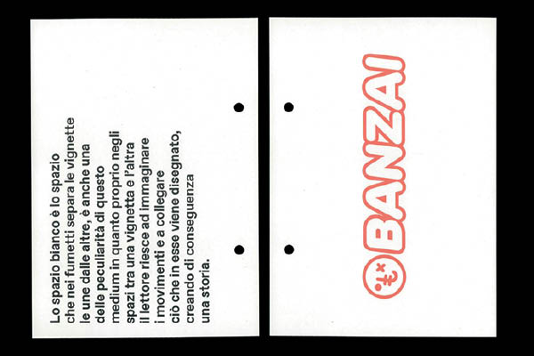
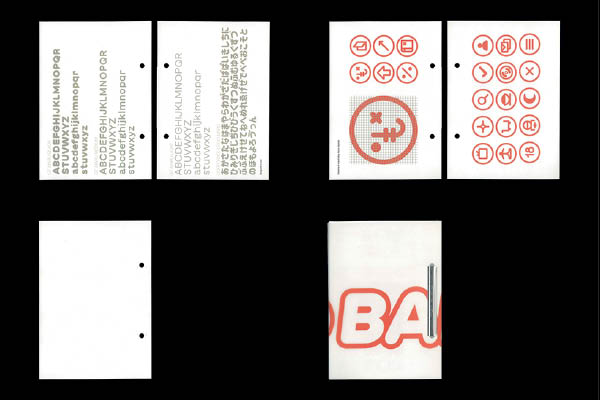
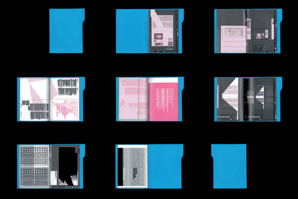
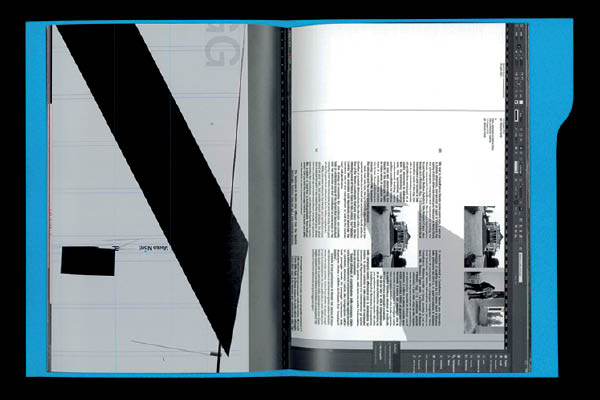
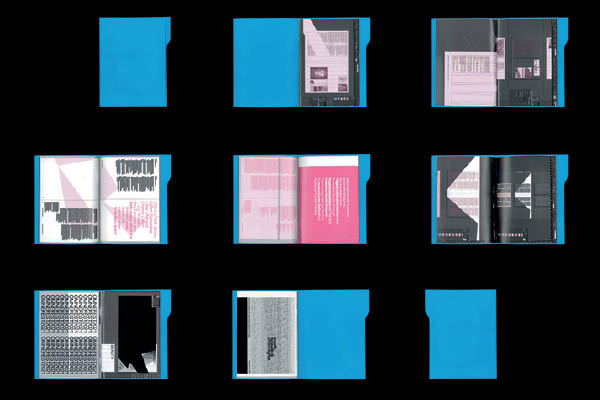
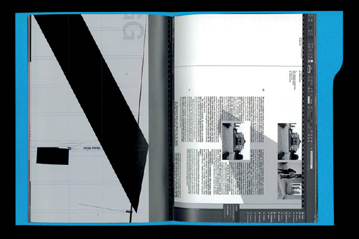

Please come back, pizza photos are baking
 

Evasioni Botaniche is a project that seeks to highlight our personal view of plants as active habitants of the botanical garden, seeking not to passively suffer the rules and order imposed by humans but to escape from it, seeking their own autonomous path. The photographic part is joined by parts of Alexander Supertramp's diary that make a connection between common will of plants and human in modern society.
This project was made with Tobia Farinati during the course of editorial design at ISIA U.
 



 



Insetti was born during the months of internship in Otium. It is a visual research that wants to report almost all the bugs, especially the craziest ones, that have been generated in the span of five months in InDesign. This research comes from the desire to read in an antithetical way episodes normally perceived as problematic, elevating them to events worthy of stupor. The choice to transform this research into an editorial product underlines the antitheticity between anological medium and notes that are the result of a digital language.
OMNEFEST is a photographic festival realized by OMNE, Osservatorio Mobile Nord-Est, which proposes the outcomes of artist residencies conducted in the geographic area of the Italian Northeast through a rich program of exhibitions, editorial projects and conferences. I was able to collaborate on the graphic design and communication apparatus of the 2021 edition with Otium studio and Damiano Fraccaro, who I helped in particular with digital content and motion design.
OMNE/BEAUTY 2018-2020 is a volume published by Skinnerboox that encloses the outcomes of the second artist residency supported by OMNE, it is conceived as a container, a real box designed to enclose, in addition to the volume of texts, eight dossiers, one for each artist, respecting the authorial dimension and the plural vision inherent in the very concept of beauty. Damiano Fraccaro / Otium edited the editorial project that was carried out in collaboration with OMNE and to which I was able to give my contribution in the layout part.
This fanzine is designed to reorder through a printed, physical and tangible medium, the ineffability of a dull, tiring, surreal and electrifying day of filming. The present moments were captured through the lens of an old camera with obvious infiltrations of light, which unintentionally described perfectly the atmosphere that could be felt.
The project for the debut album of the Padua-based band Seville was born from the sense of randomness and melancholy that everyday life generates and that the group expresses within the record. It came spontaneously, therefore, my desire to visually capture their message, with a conscious process but one that would guarantee a result that was not entirely controllable. The use of acrylic color on acetate allowed me to represent this perfectly.
Cover for Sottoterra, a project of Dischi Sotterranei music label, a unique playlists to spotlight new emerging releases from the Italian music scene by asking young artists and graphic designers to contribute by designing the covers of these monthly collections. The overlapping of multiple layers seeks a recall with the juxtaposition of different sonorities within the collection and a visual connection with the overlapping of the various layers in the ground, investigating in a possible graphic underground.
Albums covers for Varsavia, a side project of young musician Giulio Patarnello. Exploring while experimenting through digital, dark and noise sounds, the tracks create soundscapes that the covers seek a dialogue with, at times anguished and oppressive.